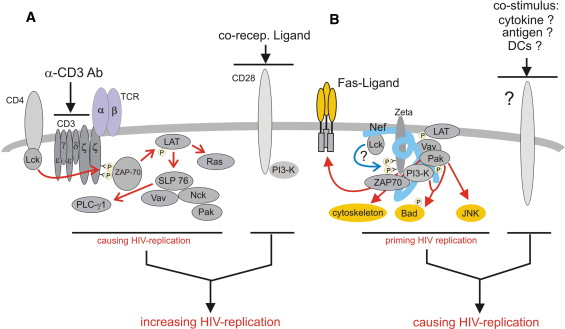

Volume 16, Issue 4, April 2002, Pages 493–497

Live and Let Die: Nef Functions beyond HIV Replication


- 1 Department of Dermatology, University of Erlangen/Nürnberg, D-91052 Erlangen, Germany
- 2 Department of Virology, University of Heidelberg, D-69120 Heidelberg, Germany
- Available online 22 April 2002
Abstract
The viral Nef protein is important for the progression of the human and simian immunodeficiency virus (HIV/SIV) infection. So far, experimental evidence has suggested that Nef enhances viral replication and infectivity through a combination of different effects. Recent insights, however, indicate that its functions are more complex than previously anticipated. By targeting the T cell receptor, Nef may not only prime viral replication but, more importantly, ensure viral survival through distinct mechanisms of immune evasion and antiapoptosis.
Main Text
Ever since Kestler and colleagues reported that the Nef protein of HIV/SIV has a license to kill (Kestler et al., 1991), this small viral protein was searched for functions that would explain its contribution to AIDS pathogenesis. In particular, through studies in the monkey model, it became obvious that Nef dramatically increases particle production, causing a rapid spread of the virus, CD4 T cell depletion, and finally immunodeficiency.
In the early 90s, Nef research focused on two hallmark functions of Nef, namely the downmodulation of the surface receptors CD4 (Garcia and Miller, 1991) and later MHC class I (Schwartz et al., 1996). In the course of this work, much was revealed about how and by which residues Nef targets these receptors and how they may be disposed (for review see Doms and Trono, 2000). However, despite the attempts to correlate these effects with pathogenesis, it remained difficult to envision how downmodulation of receptors could account for the profound effect of Nef on viral load and replication in primary cells. This latter function of Nef was also described early and seemed to be closer to AIDS pathogenesis, but a molecular mechanism was lacking.
In the late 90s, the field shifted its interest more toward the third function of Nef, its ability to modulate T cell signaling. This change in interest came along with a number of reports demonstrating the interaction of Nef with signaling proteins acting in the T cell receptor (TCR) environment such as Lck, Vav, Pak, and PKCθ (reviewed in Renkema and Saksela, 2000), culminating in the finding that Nef associates with the TCR-ζ chain. The latter led to the upregulation of Fas ligand (Xu et al., 1999). In line with these findings, development of an AIDS-like disease in a HIV transgenic mouse model correlated with Nef-mediated activation of mouse T cells (Hanna et al., 1998). Taken together, these findings implicated that Nef is part of and acts through a TCR-associated signaling complex. A confirmation of this view was presented recently by gene expression profiling of inducible T cell lines, showing that Nef- and anti-CD3 (through crosslinking)-mediated T cell activation overlap by a stunning 97% (Simmons et al., 2001).
As much as these results established an easy to understand link to HIV pathogenesis (Nef activates T cells, which starts viral replication, which causes AIDS), the conclusion may be not that easy to draw. First, as discussed below, Nef-mediated T cell activation may not be sufficient to trigger HIV replication, and second, most recent studies point to more complex functions of Nef which require T cell signaling but are not directly linked to HIV replication.
Nef-Mediated Stimulation of the T Cell Receptor
While the concept of Nef activating T cells is not new (Baur et al., 1994), the extent of activation reported by Simmons et al. (2001), which depended on TCR-ζ and ZAP-70, is surprising. T cell activation seems to perfectly fill the needs of HIV, as one of the very early findings was that T cells had to be activated in order to get HIV replicating (Zack et al., 1990). The molecular reasons are not completely understood. Possibly, activated transcription factors such as NFAT and NFκB have to prime the viral promoter and/or establish a basal viral transcription in order to prepare the ground for the transactivator protein Tat. Upon infection of resting primary T cells, HIV does in fact express Nef even before the virus is integrated (Wu and Marsh, 2001), but viral replication remains very low or not detectable. Conversely, crosslinking of CD3 and, moreso, CD3/CD28 stimulation potently activates replication (Figure 1A). Thus, Nef- and anti-CD3-mediated activation clearly differ, at least with respect to viral replication. What could be the reason for this discrepancy?
- 

Figure 1. In T Cells, the Nef-Associated Signaling Complex Supports but Does Not Initiate HIV Replication(A) Stimulation of the T cell receptor (TCR) complex through anti-CD3 antibodies will activate/recruit a number of signaling proteins (e.g., Lck, ZAP-70), adaptors (e.g., LAT), and second messengers (e.g., Inositol-3-phosphate, not shown), leading to the activation of several signaling pathways sufficient to start HIV replication. Costimulation through CD28 will increase this effect. This substantial TCR activation circumvents the need for Nef and is sufficient to trigger HIV replication, resulting in high viral loads.(B) In the absence of exogenous stimulation, Nef assembles a TCR-associated signaling complex at the plasma membrane, leading to the activation of several pathways which cause the upregulation of Fas ligand, cytoskeletal rearrangements, phosphorylation of Bad, and activation of JNK. Although signaling by Nef and anti-CD3 are similar, the Nef-mediated effect primes but does not initiate HIV replication. The latter requires an additional stimulus, possibly through a coreceptor or cytokines.
Since Simmons and colleagues (2001) obtained their results with tumor but not primary T cells, the perhaps subtle differences of the Nef and anti-CD3 stimulus may have been masked. Based on studies with HIV and SIV, it is fair to assume that Nef acts through stimulation of the TCR-ζ chain. It should be noted, however, that Nef also stimulates signaling in cells that have no T cell receptor. ζ is part of the TCR complex (T cell receptor α and β chains, CD3 ϵ, γ, and δ chains, and ζ chain homodimer) but may also act separately. Signaling by ζ was found to correlate with induction of apoptosis and upregulation of Fas ligand Combadiere et al. 1996 and Vignaux et al. 1995, which is also seen when Nef interacts with ζ. On the other hand, ζ's contribution to other/more T cell activation pathways may involve additional chains of the TCR/CD3 complex, and this likely depends on the nature and amplitude of the stimulus. Taken together, in a physiological setting Nef may activate a ζ-specific function (e.g., Fas-ligand upregulation) but may not be strong enough to initiate a proliferative signal that would probably start HIV replication (Figure 1B). This view is in line with recent findings suggesting an increase but not an initiation of T cell activation by Nef (Schrager and Marsh, 1999).
The mechanism of how Nef activates TCR-ζ is not clear. The first step is the translocation of Nef to the plasma membrane, where upon interaction with the lipid bilayer, a conformational change possibly occurs that permits the interaction with signaling proteins (Arold and Baur, 2001). Many of these signaling proteins, like Lck or LAT, are at least partially present in glycolipid-enriched microdomains (lipid rafts) where Nef is also found (Zheng et al., 2001). Aggregation of lipid rafts initiates T cell signaling, similar to the manner of receptor stimulation by ligands. By binding to molecules of different compartments/rafts and possibly by forming oligomers, Nef may function as an intracellular crosslinker or adaptor. In this manner, for example, Nef could bring together Lck and TCR-ζ, which, as in physiological TCR stimulation, could lead to tyrosine phosphorylation and thus activation of ζ (Figure 1B).
Cellular Support for HIV Replication
Despite Nef's apparent inability to trigger particle production on its own, there is little doubt that Nef supports HIV replication. The latter has been shown in a number of studies using primary cells, like, for example, cocultures of resting T cells and immature dendritic cells (Petit et al., 2001). As was expected, Nef's ability to interact with signaling proteins of the TCR environment was found to be important for this function (Fackler et al., 2001). Thus, while Nef alone may not initiate replication, it may very well do so with some additional help (Figure 1B).
In recent years, it has been suggested that this help may come from dendritic cells and/or macrophages. Dendritic cells replicate HIV at a very low level or, as in the case of mature dendritic cells, trap the virus on the cell surface through C-type lectin receptors like DC-SIGN (for review see Steinman, 2000). Through both means, DCs are able to pass the virus to T cells and, more importantly, appear to be able to stimulate replication in the target T cell. Interestingly, in the case of mature dendritic cells, which have an increased potential for the activation of adjacent T cells through expression of coreceptors like CD80/CD86, there seems to be no requirement for Nef. Conversely, viruses passed on by immature dendritic cells need a functional nef gene to replicate in the T cell target compartment Petit et al. 2001 and Fackler et al. 2001. The underlying mechanisms are lacking, but these results point to a role for dendritic cell surface receptors as (co)stimulators of viral replication.
In addition, other cell derivatives of the monocyte lineage, like, for example, macrophages, may play the supporting cast for HIV and Nef. Infected macrophages were found to produce and secrete chemokines, among them MIP-1α and MIP-1β, in a Nef-dependent manner. The mechanism is unknown but confirms the old observation that Nef is not only able to signal in T cells. The released chemokines attracted resting T cells and stimulated them for productive viral infection (Swingler et al., 1999). This attracting scenario is certainly also attractive and might explain why macrophage-tropic viruses are important, in particular during early viral infection. Most recently, a similar observation was made for infected immature dendritic cells that attracted T cells in a Nef-dependent manner by upregulating DC-SIGN (Sol-Foulon et al., 2002). The relevance of these findings for the “in the host situation,” however, is not unchallenged, since infected T cell/dendritic or T cell/macrophage cell conglomerates are difficult to detect but have been described in vivo (Frankel et al., 1996).
In summary, the role of Nef in HIV replication is all but clear. However, a picture emerges where initiation of HIV replication does not follow a stringent scheme, but rather it appears to be a stepwise process promoted by several cumulative, and perhaps in their setting often different, signals. The advantage of such a stepwise mechanism is a better, and thus more adaptable, control of viral replication in different cellular compartments. In addition, infected cells could function like Trojan horses, bringing the virus to uninfected tissues/organs where viral replication could subsequently be triggered.
Nef's ability to prime HIV replication seems not to be its only contribution to directly boost the viral load. The well-documented downmodulation of CD4 appears to abolish inteference of the receptor with the viral Env protein gp120, which seems to increase release as well as infectivity of viral particles Ross et al. 1999 and Lama et al. 1999. In addition, Nef increases viral budding from lipid rafts, which augments viral infectivity, possibly by optimizing the maturation process of the virion (Zheng et al., 2001). The molecular mechanism is not entirely clear, nevertheless lipid rafts might emerge as structures that integrate functions of Nef in TCR signaling and cytoskeletal rearrangements, as well as viral morphogenesis.
Nef and Viral Survival: Immune Evasion
Nef is expressed early in the viral life cycle, even from nonintegrated HIV genomes (Wu and Marsh, 2001). But if not for the sake of replication, then for what reason? Looking at recent insights about the importance of immune evasion and antiapoptosis for viral infections, the answer may be rather familiar. Importantly, several recent publications connect Nef-induced signaling with exactly these functions.
Only in recent years have we begun to understand how important survival strategies are for invading pathogenic viruses, in particular when they intend to establish a chronic infection. In fact, they may be more important for viral happiness than replication itself, since during chronic infection replication is often barely detectable (e.g., in HTLV or CMV). Recent work summarized in numerous review articles has shown that most viruses usually have a bivalent defense strategy. The first arm of viral survival relies on multifaceted immune evasion mechanisms, ranging from molecular surgery (change of protein conformation/sequence), to hide-away techniques (interference with MHC antigen presentation), poison ivy (modulation/mimicry of cytokine activity), and backstabbing (induction of apoptosis by Fas ligand) (for review see Xu et al., 2001). HIV is equipped with several of these mechanisms, two of which are exerted by the Nef protein.
Selective Nef-dependent downmodulation of MHC class I A and B is not as efficient as CD4 downregulation and appears to require higher expression levels of Nef. The effect, however, was shown to be sufficient to diminish recognition of HIV-infected cells by cytotoxic T cells (CTLs) (Collins et al. 1998). This, in combination with a second Nef-dependent effect, could give the infected cell a deadly advantage. Through interaction with the TCR-ζ chain, Nef causes the upregulation of Fas ligand. HIV-specific CTLs that screen T cells for viral antigen may not recognize the infected cell fast enough to react. Instead, they might be trapped in a deadly encounter, stimulated for their own death program through Fas ligands on the infected cell (Figure 3B). In fact, evidence is mounting that HIV-infected cells are protected, while bystander cells (Finkel et al., 1995), and attacking CTLs (Mueller et al. 2001) undergo apoptosis. The latter was found to occur in a Fas-L/Fas-dependent manner and could in part explain the general exhaustion and shortened telomere length of HIV-specific CTLs in the course of the infection.
Nef and Viral Survival: Antiapoptosis
Immune evasion alone will not ensure survival of an infected cell until the next virus generation is ready to leave. In expecting a viral assault, the cell has learned to self-destruct by apoptosis as soon as something unexpected occurs, like, for example, unscheduled DNA synthesis. In addition, signals from the cell surface through death receptors TNFR1/2 and Fas could potentially stimulate death programs. The latter is a realistic scenario. First, upregulation of Fas ligand could kill the infected cell in an autocrine fashion through Fas ligation. Second, HIV gp120 ligation of CXCR4 on macrophages induces the upregulation of membrane-bound TNF, triggering cell death via TNFR in CD8 T cells (which may lead to T cell depletion) and potentially also in infected cells (Herbein et al., 1998; Figure 3B). Since both apoptotic signals, “outside-in” by death receptors and “inside-in” by unbalanced cellular homeostasis, are regulated by different signaling pathways, the invading virus has to block both routes early and efficiently.
An explanation of how HIV is handling this dilemma came from two recent reports. Geleziunas and coworkers (2001) found that Nef associates with and blocks the activity of apoptosis signaling regulating kinase 1 (ASK1; Figure 2A). ASK1 links both the Fas- and the TNFR-mediated signals (by Fas ligand and TNFα) to the downstream JNK/p38 pathways. While overexpression of ASK1 induces apoptosis, a transdominant-negative ASK1 mutant will block receptor-induced death signals. ASK1 kinase activity is inhibited by thioredoxin (Trx), a redox regulator protein, and it seems that Nef blocks the stimulus-dependent release of Trx from ASK1 (Figure 2A). By targeting ASK1, HIV acts at a similar level as other viruses but uses a different approach (see below).

Figure 2. Nef Blocks Two Independent Cellular Apoptosis Signals(A) Fas- and TNFR-mediated (“outside-in”) death signals require activation of apoptosis signaling kinase 1 (ASK1). Nef blocks ASK1, possibly by inhibiting release of ASK1-associated thioredoxin (not shown).(B) Disturbance of the cellular homeostasis may induce an apoptotic (“inside-in”) signal mediated by the mitochondria and the Bcl family of proteins (see Gross et al. 1999 for more details). Nef blocks this signal by phosphorylating Bad in a PI-3-kinase- and Pak-dependent manner. Middle T Antigen (mTAg) of polyoma virus uses a similar pathway mediated by the PI-3 and Akt kinases.
The second report shows how Nef blocks the inside-in apoptotic signal regulated by the Bcl family of proteins in conjunction with mitochondria. Proapoptotic members of this family (Bad, Bax, Bak, Bid, and others) form heterodimers with and thereby inactivate prosurvival members of the same family (Bcl2, Bcl-XL, Bcl-w, and others). In antiapoptotic signaling, the proapoptotic effectors like Bad are phosphorylated on specific serine residues, which releases Bcl-2 for prosurvival activity (Gross et al., 1999; Figure 2B). Bad phosphorylation is usually induced through ligation of cytokine or growth-factor receptors and the subsequent activation of the PI-3 and Akt kinases. The Akt kinase then directly phosphorylates Bad. Middle T Antigen (mTAg) of polyoma virus was found to activate this pathway for antiapoptotic signaling (Figure 2B). Wolf et al. (2001) now demonstrate that HIV uses the same pathway in a new variation. Like mTAg, Nef binds and activates PI-3 kinase not to stimulate Akt, as one would expect, but to activate the Nef-associated PAK kinase. The Nef-PI-3-PAK complex phosphorylated Bad, resulting in a block of apoptosis induced by serum starvation and, more importantly, by HIV replication itself. As would have been predicted, Nef antiapoptotic signaling significantly increased viral particle release, indicating how important this mechanism is for viral replication.
")
{kind=link}
{kind=link}
{kind=link}
{kind=link}
{kind=link}